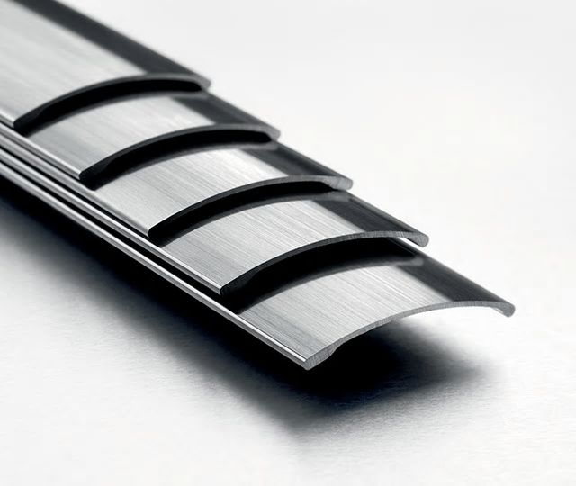
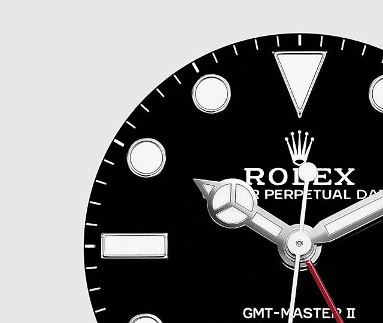
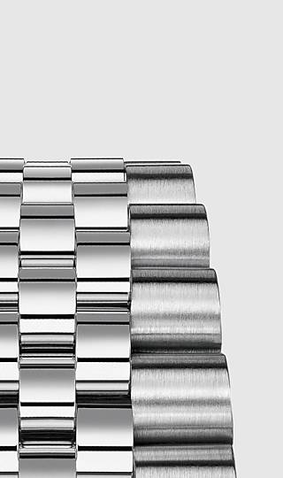
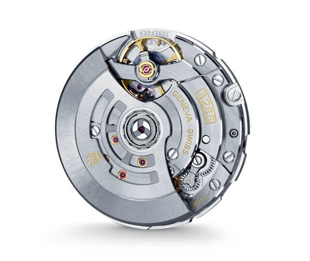
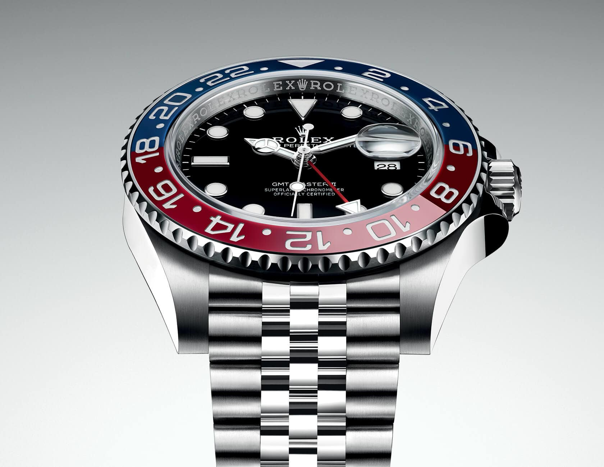

Oyster, 40 mm, acero Oystersteel.
$9,250
Although the Rolex GMT-Master was designed essentially for professional use, its combination of peerless functionality and rugged good looks has attracted a wider travelling public. As well as appreciating its ability to display different time zones, these travellers admire the robustness and versatile appearance that make the GMT-Master eminently suitable for globetrotting and, indeed, for any occasion.

OYSTERSTEEL
Rolex uses Oystersteel for its steel watch cases. Specially developed by the brand, Oystersteel belongs to the 904L steel family, superalloys most commonly used in high-technology and in the aerospace and chemical industries, where maximum resistance to corrosion is essential. Oystersteel is extremely resistant, offers an exceptional finish once polished and maintains its beauty even in the harshest environments.
BLACK DIAL
The dial is the distinctive face of a Rolex watch, the feature most responsible for its identity and readability. Characterised by hour markers fashioned from 18 ct gold to prevent tarnishing, every Rolex dial is designed and manufactured in-house, largely by hand to ensure perfection.


THE JUBILEE BRACELET
The design, development and production of Rolex bracelets and clasps, as well as the stringent tests they face, involve advanced high technology. And, as with all the components of the watch, aesthetic controls by the human eye guarantee impeccable beauty. The Jubilee, a supple and comfortable five-piece link metal bracelet, was designed and made especially for the launch of the Oyster Perpetual Datejust in 1945.
3285 MOVEMENT
The new calibre 3285, a new-generation movement entirely developed and manufactured by Rolex. With 10 patent applications filed over the course of its development, this movement features a Chronergy escapement and a guaranteed power reserve of approximately 70 hours. Like all Rolex Perpetual movements, the 3285 is a certified Swiss chronometer, a designation reserved for high-precision watches that have successfully passed the Swiss Official Chronometer Testing Institute (COSC) tests. The 3285 is equipped with a Parachrom hairspring, offering greater resistance to shocks and to temperature variations. Its architecture, in common with all Oyster watch movements, makes it singularly reliable.


A 24-hour rotatable bezel
In addition to conventional hour, minute and seconds hands, the GMT-Master II features an arrow-tipped hand, which circles the dial once every 24 hours, as well as a bidirectional rotatable 24-hour graduated bezel. The distinctively coloured 24-hour hand displays the “home” reference time in a first time zone which can be read on the graduations on the bezel. The traveller’s local time is easily set by “jumping” from hour to hour, thanks to an ingenious mechanism operated via the winding crown: the hour hand can be adjusted forwards or backwards independently of the minute and seconds hands. This allows travellers to adapt to their new time zone without affecting the precision of their timekeeping.
 Cart
Cart